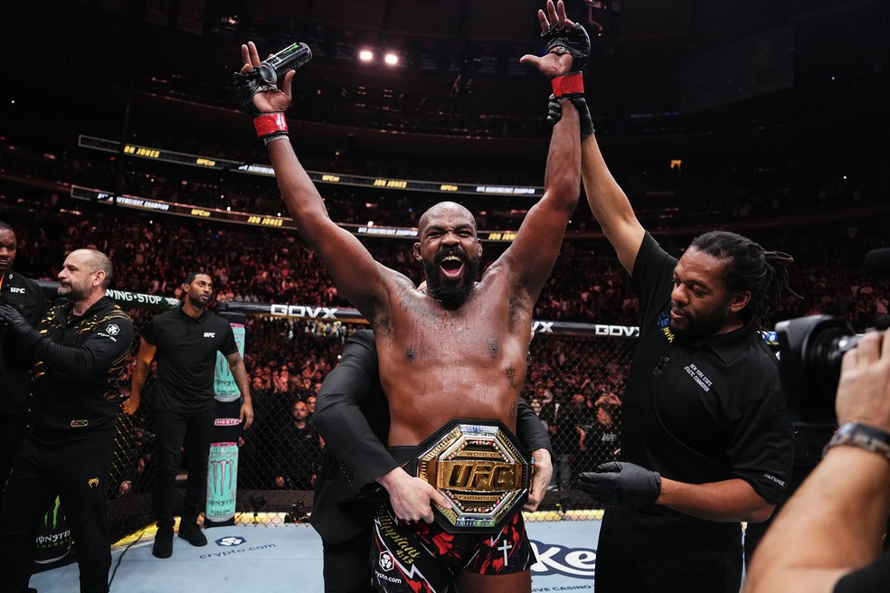

Os 3 melhores lutadores de UFC do mundo
Bem-vindo ao Lendas do Octógono, um site sobre três nomes que marcaram a história do MMA: Jon Jones, Georges St-Pierre e Anderson Silva.
Por que esses três?
Escolher os melhores de todos os tempos é uma tarefa difícil, porque cada fã olha para coisas diferentes: número de títulos, tempo no topo, nível dos adversários ou estilo de luta. Por isso, essa classificação é debatível.
Segundo o ranking histórico da Fight Matrix, o primeiro lugar é de Georges St-Pierre, o segundo é de Jon Jones e o terceiro é de José Aldo. Mesmo assim, eu escolhi Jon Jones, Georges St-Pierre e Anderson Silva por causa do impacto que eles tiveram no esporte.
Os lutadores
Jon Jones
Para muitos, Jon Jones é o maior da história do MMA. Foi campeão dos meio-pesados e também dos pesados. Seu jogo é completo: usa o wrestling, as cotoveladas, o alcance dos braços e muita inteligência de luta.

Georges St-Pierre
Georges St-Pierre, o GSP, é um dos lutadores mais técnicos e inteligentes que já passaram pelo UFC. Dominou a categoria dos meio-médios e depois ainda foi campeão dos médios. Seus pontos fortes são o wrestling, a estratégia e a capacidade de se adaptar a cada adversário.

Anderson Silva
Anderson Silva é um dos maiores representantes do Brasil no esporte. Tem uma das maiores sequências de vitórias e de defesas de cinturão da história do UFC. Ficou conhecido pela precisão, pela criatividade e pela trocação.

O que faz um grande lutador?
Olhando para os três, dá para perceber algumas qualidades que se repetem:
- Técnica
- Boxe e chutes
- Wrestling
- Jiu-jitsu
- Inteligência de luta
- Condicionamento físico
- Capacidade de adaptação
Como navegar pelo site
Para conhecer o site com calma, siga estes passos: